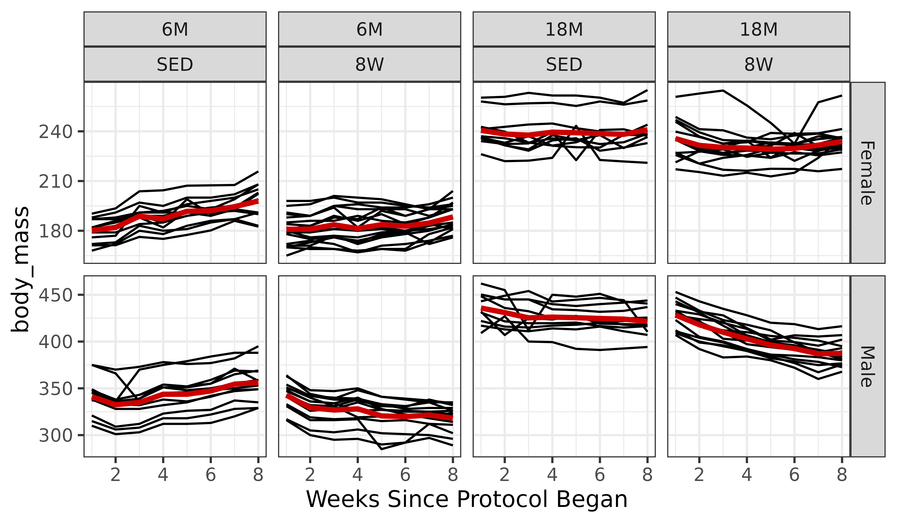

Statistical analysis of weekly body mass
Tyler Sagendorf
27 October, 2023
Source:vignettes/WEEKLY_BODY_MASS_STATS.Rmd
WEEKLY_BODY_MASS_STATS.Rmd
# Required packages
library(MotrpacRatTrainingPhysiologyData)
library(dplyr)
library(purrr)
library(tidyr)
library(tibble)
library(ggplot2)
library(nlme)
library(emmeans)
library(latex2exp)
theme_set(theme_bw()) # base plot theme
f1 <- function(model) {
standard_resid <- resid(model, type = "pearson", scaled=TRUE)
# par(mfrow = c(1, 2))
layout(matrix(1:2, nrow = 1))
plot(standard_resid ~ fitted(model),
xlab = "Fitted Values", ylab = "Standardized Pearson Residuals",
main = "Residuals vs. Fitted")
lines(loess.smooth(x = fitted(model),
y = standard_resid, degree = 2),
col = "red", lwd = 2)
qqnorm(standard_resid); qqline(standard_resid)
# par(mfrow = c(1, 1))
layout(matrix(1))
}Overview
For each rat in the SED, 1W, 4W, and 8W groups, body mass was measured at the start of weeks 1 through 7. That is, the measurement at week 1 was before the training protocol began, and the measurement at week 2 was after rats had been placed on the treadmills at a speed of 0 m/min for 15 min/day for 5 consecutive days (SED) or at a speed and duration determined by the training protocol for 5 consecutive days (1W, 2W, 4W, 8W). Therefore, we can reasonably assume that factors other than whether the rats received the training intervention were the same from week to week. This allows us to compare 8W-trained to SED animals at each week, which are the only two groups that we will focus on in this vignette.
Since we are dealing with longitudinal data (each rat has a total of
8 measurements taken across time), we need to account for the lack of
independence in the residuals for each rat. It is reasonable to assume
that the body mass of a rat at any given week is influenced by the mass
of the same rat at the previous week. That is, we do not expect a rat to
weigh 400 grams if it only weighed 300 grams the previous week.
Moreover, the body mass of any given rat does not influence the mass of
another rat. This correlation structure corresponds to an
auto-regressive process of order 1 (AR1) for each rat. We will use the
nlme::gls function to fit a generalized least squares (GLS)
model with this correlation structure.
Note: While we create plots for weekly measures of blood lactate in the “Plots of weekly total body mass and blood lactate” article, we do not perform any statistical analyses of lactate.
We will begin by modifying the data. Since we are only analyzing the
body mass data, we will remove any rows with missing body masses. Also,
since measures were made prior to the start of the week, we will
subtract 1 from week to convert it to the number of weeks since the
protocol began. For me, at least, this is easier to understand. This
shift will only affect the week labels in the plots. We also create a
categorical version of week (fweek) to be used in the GLS
model formula, while the numeric version (week) is used to
specify the correlation structure, since we need to preserve the order
in the longitudinal data (this is lost in the categorical version of
week).
df <- WEEKLY_MEASURES %>%
filter(group %in% c("SED", "8W"), !is.na(body_mass)) %>%
droplevels.data.frame() %>%
mutate(fweek = factor(week, levels = 1:8))
print.data.frame(head(df))
#> pid iowa_id omics_analysis sex group age day week week_time body_mass
#> 1 10043527 06F8T1 TRUE Female SED 6M 1 1 start 181
#> 2 10043799 06F8T3 FALSE Female SED 6M 1 1 start 182
#> 3 10043950 06F8T4 TRUE Female SED 6M 1 1 start 176
#> 4 10044094 06F8T5 FALSE Female SED 6M 1 1 start 182
#> 5 10044337 06F8T8 TRUE Female SED 6M 1 1 start 187
#> 6 10044418 06F8T9 FALSE Female SED 6M 1 1 start 179
#> lactate fweek
#> 1 NA 1
#> 2 NA 1
#> 3 NA 1
#> 4 NA 1
#> 5 NA 1
#> 6 NA 1
ggplot(df, aes(x = week, y = body_mass)) +
geom_line(aes(group = pid)) +
facet_grid(sex ~ age + group, scales = "free_y")
While individual variation is apparent, there appear to be overall trends in the different panels.
Regression Models
We will now fit a GLS model with all main effects and interactions, though without the group weights to start. Since body_mass is strictly positive, and positive continuous data typically exhibits an increasing mean–variance relationship, we will apply a log transformation. We will need to ensure we back-transform the predictions for plotting later on.
m1 <- gls(log(body_mass) ~ (age + sex + group + fweek) ^ 4,
data = df,
correlation = corAR1(form = ~ 1 | pid),
method = "ML")
f1(m1)
The residuals vs. fitted plot and QQ-plot look fine. We will check for heteroscedasticity with boxplots of residuals vs. predictors.
r <- resid(m1, type = "pearson", scaled = TRUE)
par(mfrow = c(2, 2), mar = c(3, 3, 1.5, 0.5), mgp = c(2, 1, 0))
boxplot(r ~ age, data = df, ylab = "")
boxplot(r ~ sex, data = df, ylab = "")
boxplot(r ~ group, data = df, ylab = "")
boxplot(r ~ week, data = df, ylab = "")
mtext("Standardized Residuals", side = 2, line = -1, outer = TRUE)
mtext("Residuals vs. Predictors", outer = TRUE, line = -1)
There appears to be differences in variability between the two age groups, with 18M animals being less variable. We will account for this in the model.

The diagnostic plots appear almost identical. We will examine the boxplots again.
r2 <- resid(m2, type = "pearson", scaled = TRUE)
par(mfrow = c(2, 2), mar = c(3, 3, 1.5, 0.5), mgp = c(2, 1, 0))
boxplot(r2 ~ age, data = df, ylab = "")
boxplot(r2 ~ sex, data = df, ylab = "")
boxplot(r2 ~ group, data = df, ylab = "")
boxplot(r2 ~ week, data = df, ylab = "")
mtext("Pearson Residuals", side = 2, line = -1, outer = TRUE)
mtext("Residuals vs. Predictors", outer = TRUE, line = -1)
The plots do not appear to change. We will compare the models.
AIC(m1, m2)
#> df AIC
#> m1 66 -4134.807
#> m2 67 -4134.393Even though the AIC is marginally higher, we will use the model without weights, since their inclusion seems to have little effect on the results. Now, we will try to simplify the model formula.
anova(m1)
#> Denom. DF: 782
#> numDF F-value p-value
#> (Intercept) 1 2084356.9 <.0001
#> age 1 984.2 <.0001
#> sex 1 5526.4 <.0001
#> group 1 25.4 <.0001
#> fweek 7 12.6 <.0001
#> age:sex 1 3.9 0.0493
#> age:group 1 0.0 0.9361
#> age:fweek 7 11.8 <.0001
#> sex:group 1 3.0 0.0832
#> sex:fweek 7 19.0 <.0001
#> group:fweek 7 8.9 <.0001
#> age:sex:group 1 0.0 0.9117
#> age:sex:fweek 7 9.4 <.0001
#> age:group:fweek 7 1.5 0.1775
#> sex:group:fweek 7 2.6 0.0120
#> age:sex:group:fweek 7 0.7 0.7108While the sex:group interaction is not significant at
the 0.05 level, the sex:group:fweek interaction is
significant, so we need to retain all lower-order terms.
m3 <- update(m1, model = . ~ . - age:sex:group -
age:group:week - age:sex:group:week)
anova(m1, m3)
#> Model df AIC BIC logLik
#> m1 1 66 -4134.807 -3821.933 2133.403
#> m3 2 66 -4134.807 -3821.933 2133.403There is no difference between the models, so we will use the simpler one.
m3 <- update(m3, method = "REML")
f1(m3)The diagnostic plots still look fine.
# Calculate mean body_mass for each combination of factors
df_pred <- df %>%
dplyr::select(age, sex, group, fweek, week) %>%
distinct() %>%
arrange(age, sex, group, fweek) %>%
mutate(body_mass_pred = exp(predict(object = m3, newdata = .)))
ggplot(df, aes(x = week, y = body_mass)) +
geom_line(aes(group = pid)) +
facet_grid(sex ~ age + group, scales = "free_y") +
geom_line(aes(x = week, y = body_mass_pred),
data = df_pred, color = "red3",
linewidth = 1.2) +
labs(x = "Weeks Since Protocol Began") +
theme_bw()
summary(m3)
#> Generalized least squares fit by REML
#> Model: log(body_mass) ~ age + sex + group + fweek + age:sex + age:group + age:fweek + sex:group + sex:fweek + group:fweek + age:sex:fweek + age:group:fweek + sex:group:fweek + age:sex:group:fweek
#> Data: df
#> AIC BIC logLik
#> -3586.132 -3278.45 1859.066
#>
#> Correlation Structure: AR(1)
#> Formula: ~1 | pid
#> Parameter estimate(s):
#> Phi
#> 0.9189481
#>
#> Coefficients:
#> Value Std.Error t-value p-value
#> (Intercept) 5.193828 0.01316822 394.4214 0.0000
#> age18M 0.289238 0.01953162 14.8087 0.0000
#> sexMale 0.638153 0.01862267 34.2675 0.0000
#> group8W 0.004033 0.01719893 0.2345 0.8147
#> fweek2 0.010208 0.00530180 1.9254 0.0545
#> fweek3 0.046788 0.00734438 6.3706 0.0000
#> fweek4 0.037979 0.00881346 4.3092 0.0000
#> fweek5 0.062204 0.00997448 6.2364 0.0000
#> fweek6 0.064146 0.01093323 5.8671 0.0000
#> fweek7 0.076772 0.01174547 6.5363 0.0000
#> fweek8 0.094215 0.01244522 7.5703 0.0000
#> age18M:sexMale -0.043993 0.02727050 -1.6132 0.1071
#> age18M:group8W -0.024850 0.02517811 -0.9870 0.3240
#> age18M:fweek2 -0.019625 0.00786384 -2.4956 0.0128
#> age18M:fweek3 -0.058891 0.01089348 -5.4061 0.0000
#> age18M:fweek4 -0.042549 0.01307247 -3.2549 0.0012
#> age18M:fweek5 -0.068222 0.01479455 -4.6113 0.0000
#> age18M:fweek6 -0.072387 0.01621660 -4.4638 0.0000
#> age18M:fweek7 -0.086814 0.01742135 -4.9832 0.0000
#> age18M:fweek8 -0.092800 0.01845925 -5.0273 0.0000
#> sexMale:group8W 0.000572 0.02508523 0.0228 0.9818
#> sexMale:fweek2 -0.035626 0.00749788 -4.7515 0.0000
#> sexMale:fweek3 -0.065049 0.01038652 -6.2629 0.0000
#> sexMale:fweek4 -0.030259 0.01246412 -2.4277 0.0154
#> sexMale:fweek5 -0.054435 0.01410605 -3.8590 0.0001
#> sexMale:fweek6 -0.046295 0.01546192 -2.9941 0.0028
#> sexMale:fweek7 -0.038227 0.01661060 -2.3013 0.0216
#> sexMale:fweek8 -0.050739 0.01760020 -2.8828 0.0040
#> group8W:fweek2 -0.009735 0.00692465 -1.4059 0.1601
#> group8W:fweek3 -0.031886 0.00959245 -3.3241 0.0009
#> group8W:fweek4 -0.035448 0.01151121 -3.0794 0.0021
#> group8W:fweek5 -0.046833 0.01302762 -3.5949 0.0003
#> group8W:fweek6 -0.053934 0.01427983 -3.7770 0.0002
#> group8W:fweek7 -0.056065 0.01534069 -3.6546 0.0003
#> group8W:fweek8 -0.053746 0.01625464 -3.3065 0.0010
#> age18M:sexMale:fweek2 0.033844 0.01098229 3.0817 0.0021
#> age18M:sexMale:fweek3 0.052795 0.01521311 3.4704 0.0005
#> age18M:sexMale:fweek4 0.012355 0.01825580 0.6768 0.4988
#> age18M:sexMale:fweek5 0.036583 0.02066020 1.7707 0.0770
#> age18M:sexMale:fweek6 0.028653 0.02264538 1.2653 0.2061
#> age18M:sexMale:fweek7 0.020709 0.02438732 0.8492 0.3960
#> age18M:sexMale:fweek8 0.015996 0.02567037 0.6231 0.5334
#> age18M:group8W:fweek2 0.001530 0.01013724 0.1509 0.8801
#> age18M:group8W:fweek3 0.021018 0.01404272 1.4967 0.1349
#> age18M:group8W:fweek4 0.015316 0.01685166 0.9089 0.3637
#> age18M:group8W:fweek5 0.025287 0.01907157 1.3259 0.1853
#> age18M:group8W:fweek6 0.036606 0.02090473 1.7511 0.0803
#> age18M:group8W:fweek7 0.049018 0.02245776 2.1827 0.0294
#> age18M:group8W:fweek8 0.044872 0.02379572 1.8857 0.0597
#> sexMale:group8W:fweek2 -0.004302 0.01009984 -0.4260 0.6702
#> sexMale:group8W:fweek3 0.002961 0.01399092 0.2116 0.8324
#> sexMale:group8W:fweek4 -0.015834 0.01678949 -0.9431 0.3459
#> sexMale:group8W:fweek5 -0.027616 0.01900122 -1.4534 0.1465
#> sexMale:group8W:fweek6 -0.032853 0.02082762 -1.5774 0.1151
#> sexMale:group8W:fweek7 -0.046309 0.02237492 -2.0697 0.0388
#> sexMale:group8W:fweek8 -0.063858 0.02370794 -2.6935 0.0072
#> age18M:sexMale:group8W:fweek1 0.003036 0.03598497 0.0844 0.9328
#> age18M:sexMale:group8W:fweek2 0.002085 0.03598402 0.0580 0.9538
#> age18M:sexMale:group8W:fweek3 -0.008632 0.03598289 -0.2399 0.8105
#> age18M:sexMale:group8W:fweek4 0.000100 0.03598155 0.0028 0.9978
#> age18M:sexMale:group8W:fweek5 -0.001959 0.03597997 -0.0545 0.9566
#> age18M:sexMale:group8W:fweek6 -0.008391 0.03597810 -0.2332 0.8156
#> age18M:sexMale:group8W:fweek7 -0.017796 0.03605642 -0.4936 0.6218
#> age18M:sexMale:group8W:fweek8 0.008418 0.03597810 0.2340 0.8151
#>
#> Correlation:
#> (Intr) age18M sexMal grop8W fweek2 fweek3 fweek4
#> age18M -0.674
#> sexMale -0.707 0.477
#> group8W -0.766 0.516 0.541
#> fweek2 -0.201 0.136 0.142 0.154
#> fweek3 -0.279 0.188 0.197 0.214 0.693
#> fweek4 -0.335 0.226 0.237 0.256 0.555 0.800
#> fweek5 -0.379 0.255 0.268 0.290 0.472 0.679 0.848
#> fweek6 -0.415 0.280 0.294 0.318 0.415 0.597 0.743
#> fweek7 -0.446 0.301 0.315 0.341 0.374 0.536 0.666
#> fweek8 -0.473 0.319 0.334 0.362 0.341 0.488 0.607
#> age18M:sexMale 0.483 -0.716 -0.683 -0.370 -0.097 -0.135 -0.162
#> age18M:group8W 0.523 -0.776 -0.370 -0.683 -0.105 -0.146 -0.175
#> age18M:fweek2 0.136 -0.201 -0.096 -0.104 -0.674 -0.467 -0.374
#> age18M:fweek3 0.188 -0.279 -0.133 -0.144 -0.467 -0.674 -0.539
#> age18M:fweek4 0.226 -0.335 -0.160 -0.173 -0.374 -0.539 -0.674
#> age18M:fweek5 0.255 -0.379 -0.181 -0.196 -0.318 -0.458 -0.572
#> age18M:fweek6 0.280 -0.415 -0.198 -0.214 -0.280 -0.402 -0.501
#> age18M:fweek7 0.301 -0.446 -0.213 -0.230 -0.252 -0.361 -0.449
#> age18M:fweek8 0.319 -0.473 -0.225 -0.244 -0.230 -0.329 -0.409
#> sexMale:group8W 0.525 -0.354 -0.742 -0.686 -0.106 -0.146 -0.176
#> sexMale:fweek2 0.142 -0.096 -0.201 -0.109 -0.707 -0.490 -0.392
#> sexMale:fweek3 0.197 -0.133 -0.279 -0.151 -0.490 -0.707 -0.565
#> sexMale:fweek4 0.237 -0.160 -0.335 -0.181 -0.392 -0.565 -0.707
#> sexMale:fweek5 0.268 -0.181 -0.379 -0.205 -0.334 -0.480 -0.599
#> sexMale:fweek6 0.294 -0.198 -0.415 -0.225 -0.294 -0.422 -0.526
#> sexMale:fweek7 0.315 -0.213 -0.446 -0.241 -0.264 -0.379 -0.471
#> sexMale:fweek8 0.334 -0.225 -0.473 -0.256 -0.241 -0.345 -0.429
#> group8W:fweek2 0.154 -0.104 -0.109 -0.201 -0.766 -0.530 -0.425
#> group8W:fweek3 0.214 -0.144 -0.151 -0.279 -0.530 -0.766 -0.612
#> group8W:fweek4 0.256 -0.173 -0.181 -0.335 -0.425 -0.612 -0.766
#> group8W:fweek5 0.290 -0.196 -0.205 -0.379 -0.361 -0.520 -0.649
#> group8W:fweek6 0.318 -0.214 -0.225 -0.415 -0.318 -0.457 -0.569
#> group8W:fweek7 0.341 -0.230 -0.241 -0.446 -0.286 -0.410 -0.510
#> group8W:fweek8 0.362 -0.244 -0.256 -0.473 -0.261 -0.374 -0.464
#> age18M:sexMale:fweek2 -0.097 0.144 0.137 0.074 0.483 0.334 0.268
#> age18M:sexMale:fweek3 -0.135 0.200 0.190 0.103 0.334 0.483 0.386
#> age18M:sexMale:fweek4 -0.162 0.240 0.228 0.124 0.268 0.386 0.483
#> age18M:sexMale:fweek5 -0.183 0.271 0.259 0.140 0.228 0.328 0.409
#> age18M:sexMale:fweek6 -0.200 0.297 0.283 0.153 0.201 0.288 0.359
#> age18M:sexMale:fweek7 -0.215 0.319 0.304 0.164 0.180 0.258 0.321
#> age18M:sexMale:fweek8 -0.229 0.340 0.324 0.175 0.165 0.237 0.294
#> age18M:group8W:fweek2 -0.105 0.156 0.074 0.138 0.523 0.362 0.290
#> age18M:group8W:fweek3 -0.146 0.216 0.103 0.190 0.362 0.523 0.418
#> age18M:group8W:fweek4 -0.175 0.260 0.124 0.229 0.290 0.418 0.523
#> age18M:group8W:fweek5 -0.198 0.294 0.140 0.259 0.247 0.355 0.443
#> age18M:group8W:fweek6 -0.217 0.322 0.154 0.284 0.217 0.312 0.389
#> age18M:group8W:fweek7 -0.233 0.346 0.165 0.305 0.195 0.280 0.348
#> age18M:group8W:fweek8 -0.247 0.367 0.175 0.323 0.178 0.255 0.317
#> sexMale:group8W:fweek2 -0.106 0.071 0.149 0.138 0.525 0.364 0.291
#> sexMale:group8W:fweek3 -0.146 0.099 0.207 0.191 0.364 0.525 0.420
#> sexMale:group8W:fweek4 -0.176 0.118 0.248 0.229 0.291 0.420 0.525
#> sexMale:group8W:fweek5 -0.199 0.134 0.281 0.260 0.248 0.356 0.445
#> sexMale:group8W:fweek6 -0.218 0.147 0.308 0.285 0.218 0.313 0.390
#> sexMale:group8W:fweek7 -0.234 0.158 0.331 0.306 0.196 0.281 0.350
#> sexMale:group8W:fweek8 -0.248 0.167 0.351 0.324 0.179 0.256 0.318
#> age18M:sexMale:group8W:fweek1 -0.366 0.543 0.518 0.478 0.074 0.102 0.122
#> age18M:sexMale:group8W:fweek2 -0.336 0.499 0.476 0.439 -0.074 0.000 0.041
#> age18M:sexMale:group8W:fweek3 -0.309 0.458 0.437 0.404 -0.068 -0.102 -0.041
#> age18M:sexMale:group8W:fweek4 -0.284 0.421 0.402 0.371 -0.062 -0.094 -0.122
#> age18M:sexMale:group8W:fweek5 -0.261 0.387 0.369 0.341 -0.057 -0.086 -0.113
#> age18M:sexMale:group8W:fweek6 -0.240 0.356 0.339 0.313 -0.053 -0.079 -0.103
#> age18M:sexMale:group8W:fweek7 -0.220 0.326 0.311 0.287 -0.048 -0.073 -0.095
#> age18M:sexMale:group8W:fweek8 -0.203 0.300 0.286 0.265 -0.044 -0.067 -0.087
#> fweek5 fweek6 fweek7 fweek8 ag18M:M ag18M:8W
#> age18M
#> sexMale
#> group8W
#> fweek2
#> fweek3
#> fweek4
#> fweek5
#> fweek6 0.875
#> fweek7 0.783 0.893
#> fweek8 0.712 0.810 0.906
#> age18M:sexMale -0.183 -0.200 -0.215 -0.228
#> age18M:group8W -0.198 -0.217 -0.233 -0.247 0.556
#> age18M:fweek2 -0.318 -0.280 -0.252 -0.230 0.144 0.156
#> age18M:fweek3 -0.458 -0.402 -0.361 -0.329 0.200 0.216
#> age18M:fweek4 -0.572 -0.501 -0.449 -0.409 0.240 0.260
#> age18M:fweek5 -0.674 -0.590 -0.528 -0.480 0.271 0.294
#> age18M:fweek6 -0.590 -0.674 -0.602 -0.546 0.297 0.322
#> age18M:fweek7 -0.528 -0.602 -0.674 -0.611 0.319 0.346
#> age18M:fweek8 -0.480 -0.546 -0.611 -0.674 0.338 0.367
#> sexMale:group8W -0.199 -0.218 -0.234 -0.248 0.507 0.468
#> sexMale:fweek2 -0.334 -0.294 -0.264 -0.241 0.137 0.074
#> sexMale:fweek3 -0.480 -0.422 -0.379 -0.345 0.190 0.103
#> sexMale:fweek4 -0.599 -0.526 -0.471 -0.429 0.229 0.124
#> sexMale:fweek5 -0.707 -0.619 -0.554 -0.503 0.259 0.140
#> sexMale:fweek6 -0.619 -0.707 -0.632 -0.573 0.283 0.154
#> sexMale:fweek7 -0.554 -0.632 -0.707 -0.640 0.305 0.165
#> sexMale:fweek8 -0.503 -0.573 -0.640 -0.707 0.323 0.175
#> group8W:fweek2 -0.361 -0.318 -0.286 -0.261 0.074 0.138
#> group8W:fweek3 -0.520 -0.457 -0.410 -0.374 0.103 0.190
#> group8W:fweek4 -0.649 -0.569 -0.510 -0.464 0.124 0.229
#> group8W:fweek5 -0.766 -0.670 -0.600 -0.545 0.140 0.259
#> group8W:fweek6 -0.670 -0.766 -0.684 -0.620 0.153 0.284
#> group8W:fweek7 -0.600 -0.684 -0.766 -0.693 0.165 0.305
#> group8W:fweek8 -0.545 -0.620 -0.693 -0.766 0.175 0.323
#> age18M:sexMale:fweek2 0.228 0.201 0.180 0.165 -0.201 -0.112
#> age18M:sexMale:fweek3 0.328 0.288 0.259 0.236 -0.279 -0.155
#> age18M:sexMale:fweek4 0.409 0.359 0.322 0.293 -0.335 -0.186
#> age18M:sexMale:fweek5 0.483 0.423 0.378 0.344 -0.379 -0.210
#> age18M:sexMale:fweek6 0.423 0.483 0.431 0.391 -0.416 -0.231
#> age18M:sexMale:fweek7 0.377 0.430 0.482 0.436 -0.443 -0.247
#> age18M:sexMale:fweek8 0.345 0.393 0.439 0.485 -0.471 -0.264
#> age18M:group8W:fweek2 0.247 0.217 0.195 0.178 -0.112 -0.201
#> age18M:group8W:fweek3 0.355 0.312 0.280 0.255 -0.155 -0.279
#> age18M:group8W:fweek4 0.443 0.389 0.348 0.317 -0.186 -0.335
#> age18M:group8W:fweek5 0.523 0.458 0.410 0.372 -0.210 -0.379
#> age18M:group8W:fweek6 0.458 0.523 0.467 0.424 -0.231 -0.415
#> age18M:group8W:fweek7 0.410 0.467 0.523 0.474 -0.248 -0.446
#> age18M:group8W:fweek8 0.372 0.424 0.474 0.523 -0.263 -0.473
#> sexMale:group8W:fweek2 0.248 0.218 0.196 0.179 -0.102 -0.094
#> sexMale:group8W:fweek3 0.356 0.313 0.281 0.256 -0.141 -0.131
#> sexMale:group8W:fweek4 0.445 0.390 0.350 0.318 -0.170 -0.157
#> sexMale:group8W:fweek5 0.525 0.459 0.411 0.374 -0.192 -0.177
#> sexMale:group8W:fweek6 0.459 0.525 0.469 0.425 -0.210 -0.194
#> sexMale:group8W:fweek7 0.411 0.469 0.525 0.475 -0.226 -0.209
#> sexMale:group8W:fweek8 0.374 0.425 0.475 0.525 -0.240 -0.221
#> age18M:sexMale:group8W:fweek1 0.139 0.152 0.163 0.173 -0.758 -0.700
#> age18M:sexMale:group8W:fweek2 0.069 0.091 0.108 0.123 -0.696 -0.643
#> age18M:sexMale:group8W:fweek3 0.000 0.030 0.054 0.073 -0.640 -0.591
#> age18M:sexMale:group8W:fweek4 -0.069 -0.030 0.000 0.024 -0.588 -0.543
#> age18M:sexMale:group8W:fweek5 -0.139 -0.091 -0.054 -0.024 -0.540 -0.499
#> age18M:sexMale:group8W:fweek6 -0.127 -0.152 -0.108 -0.073 -0.496 -0.459
#> age18M:sexMale:group8W:fweek7 -0.117 -0.139 -0.163 -0.122 -0.457 -0.421
#> age18M:sexMale:group8W:fweek8 -0.108 -0.128 -0.150 -0.173 -0.422 -0.387
#> a18M:2 a18M:3 a18M:4 a18M:5 a18M:6 a18M:7 ag18M:8
#> age18M
#> sexMale
#> group8W
#> fweek2
#> fweek3
#> fweek4
#> fweek5
#> fweek6
#> fweek7
#> fweek8
#> age18M:sexMale
#> age18M:group8W
#> age18M:fweek2
#> age18M:fweek3 0.693
#> age18M:fweek4 0.555 0.800
#> age18M:fweek5 0.472 0.679 0.848
#> age18M:fweek6 0.415 0.597 0.743 0.875
#> age18M:fweek7 0.374 0.536 0.666 0.783 0.893
#> age18M:fweek8 0.341 0.488 0.607 0.712 0.810 0.906
#> sexMale:group8W 0.071 0.099 0.118 0.134 0.147 0.158 0.167
#> sexMale:fweek2 0.477 0.330 0.264 0.225 0.198 0.178 0.163
#> sexMale:fweek3 0.330 0.477 0.381 0.324 0.284 0.255 0.233
#> sexMale:fweek4 0.264 0.381 0.477 0.404 0.354 0.318 0.289
#> sexMale:fweek5 0.225 0.324 0.404 0.477 0.417 0.373 0.339
#> sexMale:fweek6 0.198 0.284 0.354 0.417 0.477 0.426 0.386
#> sexMale:fweek7 0.178 0.255 0.318 0.373 0.426 0.477 0.432
#> sexMale:fweek8 0.163 0.233 0.289 0.339 0.386 0.432 0.477
#> group8W:fweek2 0.516 0.358 0.286 0.244 0.214 0.193 0.176
#> group8W:fweek3 0.358 0.516 0.413 0.351 0.308 0.276 0.252
#> group8W:fweek4 0.286 0.413 0.516 0.438 0.384 0.344 0.313
#> group8W:fweek5 0.244 0.351 0.438 0.516 0.452 0.404 0.367
#> group8W:fweek6 0.214 0.308 0.384 0.452 0.516 0.461 0.418
#> group8W:fweek7 0.193 0.276 0.344 0.404 0.461 0.516 0.467
#> group8W:fweek8 0.176 0.252 0.313 0.367 0.418 0.467 0.516
#> age18M:sexMale:fweek2 -0.716 -0.496 -0.397 -0.338 -0.297 -0.268 -0.244
#> age18M:sexMale:fweek3 -0.496 -0.716 -0.573 -0.486 -0.427 -0.384 -0.350
#> age18M:sexMale:fweek4 -0.397 -0.573 -0.716 -0.607 -0.532 -0.477 -0.434
#> age18M:sexMale:fweek5 -0.338 -0.486 -0.607 -0.716 -0.627 -0.561 -0.510
#> age18M:sexMale:fweek6 -0.297 -0.427 -0.532 -0.627 -0.716 -0.640 -0.580
#> age18M:sexMale:fweek7 -0.267 -0.383 -0.476 -0.559 -0.638 -0.714 -0.647
#> age18M:sexMale:fweek8 -0.245 -0.351 -0.436 -0.512 -0.583 -0.651 -0.719
#> age18M:group8W:fweek2 -0.776 -0.537 -0.430 -0.366 -0.322 -0.290 -0.265
#> age18M:group8W:fweek3 -0.537 -0.776 -0.620 -0.527 -0.463 -0.415 -0.379
#> age18M:group8W:fweek4 -0.430 -0.620 -0.776 -0.658 -0.577 -0.517 -0.471
#> age18M:group8W:fweek5 -0.366 -0.527 -0.658 -0.776 -0.679 -0.608 -0.552
#> age18M:group8W:fweek6 -0.322 -0.463 -0.577 -0.679 -0.776 -0.693 -0.628
#> age18M:group8W:fweek7 -0.290 -0.415 -0.517 -0.608 -0.693 -0.776 -0.702
#> age18M:group8W:fweek8 -0.265 -0.379 -0.471 -0.552 -0.628 -0.702 -0.776
#> sexMale:group8W:fweek2 -0.354 -0.245 -0.196 -0.167 -0.147 -0.132 -0.121
#> sexMale:group8W:fweek3 -0.245 -0.354 -0.283 -0.240 -0.211 -0.190 -0.173
#> sexMale:group8W:fweek4 -0.196 -0.283 -0.354 -0.300 -0.263 -0.236 -0.215
#> sexMale:group8W:fweek5 -0.167 -0.240 -0.300 -0.354 -0.310 -0.277 -0.252
#> sexMale:group8W:fweek6 -0.147 -0.211 -0.263 -0.310 -0.354 -0.316 -0.287
#> sexMale:group8W:fweek7 -0.132 -0.190 -0.236 -0.277 -0.316 -0.354 -0.320
#> sexMale:group8W:fweek8 -0.121 -0.173 -0.215 -0.252 -0.287 -0.320 -0.354
#> age18M:sexMale:group8W:fweek1 -0.109 -0.151 -0.182 -0.206 -0.225 -0.242 -0.256
#> age18M:sexMale:group8W:fweek2 0.109 0.000 -0.060 -0.102 -0.135 -0.160 -0.182
#> age18M:sexMale:group8W:fweek3 0.100 0.151 0.060 0.000 -0.045 -0.080 -0.109
#> age18M:sexMale:group8W:fweek4 0.092 0.139 0.182 0.102 0.045 0.000 -0.036
#> age18M:sexMale:group8W:fweek5 0.085 0.128 0.167 0.206 0.135 0.080 0.036
#> age18M:sexMale:group8W:fweek6 0.078 0.117 0.153 0.189 0.225 0.160 0.109
#> age18M:sexMale:group8W:fweek7 0.071 0.108 0.141 0.173 0.207 0.242 0.182
#> age18M:sexMale:group8W:fweek8 0.066 0.099 0.130 0.160 0.190 0.222 0.257
#> sxM:8W sxMl:2 sxMl:3 sxMl:4 sxMl:5 sxMl:6 sxMl:7
#> age18M
#> sexMale
#> group8W
#> fweek2
#> fweek3
#> fweek4
#> fweek5
#> fweek6
#> fweek7
#> fweek8
#> age18M:sexMale
#> age18M:group8W
#> age18M:fweek2
#> age18M:fweek3
#> age18M:fweek4
#> age18M:fweek5
#> age18M:fweek6
#> age18M:fweek7
#> age18M:fweek8
#> sexMale:group8W
#> sexMale:fweek2 0.149
#> sexMale:fweek3 0.207 0.693
#> sexMale:fweek4 0.248 0.555 0.800
#> sexMale:fweek5 0.281 0.472 0.679 0.848
#> sexMale:fweek6 0.308 0.415 0.597 0.743 0.875
#> sexMale:fweek7 0.331 0.374 0.536 0.666 0.783 0.893
#> sexMale:fweek8 0.351 0.341 0.488 0.607 0.712 0.810 0.906
#> group8W:fweek2 0.138 0.541 0.375 0.300 0.256 0.225 0.202
#> group8W:fweek3 0.191 0.375 0.541 0.433 0.368 0.323 0.290
#> group8W:fweek4 0.229 0.300 0.433 0.541 0.459 0.402 0.361
#> group8W:fweek5 0.260 0.256 0.368 0.459 0.541 0.474 0.424
#> group8W:fweek6 0.285 0.225 0.323 0.402 0.474 0.541 0.484
#> group8W:fweek7 0.306 0.202 0.290 0.361 0.424 0.484 0.541
#> group8W:fweek8 0.324 0.185 0.264 0.328 0.385 0.439 0.490
#> age18M:sexMale:fweek2 -0.102 -0.683 -0.473 -0.379 -0.322 -0.284 -0.255
#> age18M:sexMale:fweek3 -0.141 -0.473 -0.683 -0.546 -0.464 -0.407 -0.366
#> age18M:sexMale:fweek4 -0.170 -0.379 -0.546 -0.683 -0.579 -0.508 -0.455
#> age18M:sexMale:fweek5 -0.192 -0.322 -0.464 -0.579 -0.683 -0.598 -0.535
#> age18M:sexMale:fweek6 -0.210 -0.284 -0.407 -0.508 -0.598 -0.683 -0.610
#> age18M:sexMale:fweek7 -0.226 -0.254 -0.365 -0.454 -0.533 -0.608 -0.681
#> age18M:sexMale:fweek8 -0.241 -0.234 -0.335 -0.416 -0.488 -0.555 -0.621
#> age18M:group8W:fweek2 -0.094 -0.370 -0.256 -0.205 -0.175 -0.154 -0.138
#> age18M:group8W:fweek3 -0.131 -0.256 -0.370 -0.296 -0.251 -0.221 -0.198
#> age18M:group8W:fweek4 -0.157 -0.205 -0.296 -0.370 -0.314 -0.275 -0.246
#> age18M:group8W:fweek5 -0.177 -0.175 -0.251 -0.314 -0.370 -0.324 -0.290
#> age18M:group8W:fweek6 -0.194 -0.154 -0.221 -0.275 -0.324 -0.370 -0.330
#> age18M:group8W:fweek7 -0.209 -0.138 -0.198 -0.246 -0.290 -0.330 -0.370
#> age18M:group8W:fweek8 -0.221 -0.126 -0.181 -0.224 -0.263 -0.300 -0.335
#> sexMale:group8W:fweek2 -0.201 -0.742 -0.514 -0.412 -0.350 -0.308 -0.277
#> sexMale:group8W:fweek3 -0.279 -0.514 -0.742 -0.594 -0.504 -0.443 -0.398
#> sexMale:group8W:fweek4 -0.335 -0.412 -0.594 -0.742 -0.629 -0.552 -0.495
#> sexMale:group8W:fweek5 -0.379 -0.350 -0.504 -0.629 -0.742 -0.650 -0.581
#> sexMale:group8W:fweek6 -0.415 -0.308 -0.443 -0.552 -0.650 -0.742 -0.663
#> sexMale:group8W:fweek7 -0.446 -0.277 -0.398 -0.495 -0.581 -0.663 -0.742
#> sexMale:group8W:fweek8 -0.473 -0.253 -0.363 -0.450 -0.528 -0.601 -0.672
#> age18M:sexMale:group8W:fweek1 -0.697 -0.104 -0.144 -0.173 -0.196 -0.215 -0.231
#> age18M:sexMale:group8W:fweek2 -0.641 0.104 0.000 -0.058 -0.098 -0.128 -0.153
#> age18M:sexMale:group8W:fweek3 -0.589 0.096 0.144 0.058 0.000 -0.043 -0.076
#> age18M:sexMale:group8W:fweek4 -0.541 0.088 0.133 0.173 0.098 0.043 0.000
#> age18M:sexMale:group8W:fweek5 -0.497 0.081 0.122 0.159 0.196 0.128 0.076
#> age18M:sexMale:group8W:fweek6 -0.457 0.074 0.112 0.146 0.180 0.215 0.153
#> age18M:sexMale:group8W:fweek7 -0.419 0.068 0.103 0.134 0.165 0.197 0.230
#> age18M:sexMale:group8W:fweek8 -0.386 0.063 0.095 0.124 0.152 0.181 0.212
#> sxMl:8 gr8W:2 gr8W:3 gr8W:4 gr8W:5 gr8W:6 gr8W:7
#> age18M
#> sexMale
#> group8W
#> fweek2
#> fweek3
#> fweek4
#> fweek5
#> fweek6
#> fweek7
#> fweek8
#> age18M:sexMale
#> age18M:group8W
#> age18M:fweek2
#> age18M:fweek3
#> age18M:fweek4
#> age18M:fweek5
#> age18M:fweek6
#> age18M:fweek7
#> age18M:fweek8
#> sexMale:group8W
#> sexMale:fweek2
#> sexMale:fweek3
#> sexMale:fweek4
#> sexMale:fweek5
#> sexMale:fweek6
#> sexMale:fweek7
#> sexMale:fweek8
#> group8W:fweek2 0.185
#> group8W:fweek3 0.264 0.693
#> group8W:fweek4 0.328 0.555 0.800
#> group8W:fweek5 0.385 0.472 0.679 0.848
#> group8W:fweek6 0.439 0.415 0.597 0.743 0.875
#> group8W:fweek7 0.490 0.374 0.536 0.666 0.783 0.893
#> group8W:fweek8 0.541 0.341 0.488 0.607 0.712 0.810 0.906
#> age18M:sexMale:fweek2 -0.233 -0.370 -0.256 -0.205 -0.174 -0.154 -0.138
#> age18M:sexMale:fweek3 -0.333 -0.256 -0.370 -0.296 -0.251 -0.220 -0.198
#> age18M:sexMale:fweek4 -0.414 -0.205 -0.296 -0.370 -0.313 -0.275 -0.246
#> age18M:sexMale:fweek5 -0.486 -0.174 -0.251 -0.313 -0.370 -0.324 -0.289
#> age18M:sexMale:fweek6 -0.553 -0.154 -0.221 -0.275 -0.324 -0.370 -0.330
#> age18M:sexMale:fweek7 -0.617 -0.138 -0.198 -0.246 -0.289 -0.329 -0.369
#> age18M:sexMale:fweek8 -0.686 -0.127 -0.181 -0.225 -0.264 -0.301 -0.336
#> age18M:group8W:fweek2 -0.126 -0.683 -0.473 -0.379 -0.322 -0.284 -0.255
#> age18M:group8W:fweek3 -0.181 -0.473 -0.683 -0.546 -0.464 -0.407 -0.366
#> age18M:group8W:fweek4 -0.224 -0.379 -0.546 -0.683 -0.579 -0.508 -0.455
#> age18M:group8W:fweek5 -0.263 -0.322 -0.464 -0.579 -0.683 -0.598 -0.535
#> age18M:group8W:fweek6 -0.300 -0.284 -0.407 -0.508 -0.598 -0.683 -0.610
#> age18M:group8W:fweek7 -0.335 -0.255 -0.366 -0.455 -0.535 -0.610 -0.683
#> age18M:group8W:fweek8 -0.370 -0.233 -0.334 -0.414 -0.486 -0.553 -0.619
#> sexMale:group8W:fweek2 -0.253 -0.686 -0.475 -0.380 -0.324 -0.285 -0.256
#> sexMale:group8W:fweek3 -0.363 -0.475 -0.686 -0.548 -0.466 -0.409 -0.367
#> sexMale:group8W:fweek4 -0.450 -0.380 -0.548 -0.686 -0.581 -0.510 -0.457
#> sexMale:group8W:fweek5 -0.528 -0.324 -0.466 -0.581 -0.686 -0.600 -0.537
#> sexMale:group8W:fweek6 -0.601 -0.285 -0.409 -0.510 -0.600 -0.686 -0.612
#> sexMale:group8W:fweek7 -0.672 -0.256 -0.367 -0.457 -0.537 -0.612 -0.686
#> sexMale:group8W:fweek8 -0.742 -0.234 -0.335 -0.416 -0.488 -0.555 -0.621
#> age18M:sexMale:group8W:fweek1 -0.245 -0.096 -0.133 -0.160 -0.181 -0.198 -0.213
#> age18M:sexMale:group8W:fweek2 -0.173 0.096 0.000 -0.053 -0.090 -0.118 -0.141
#> age18M:sexMale:group8W:fweek3 -0.104 0.088 0.133 0.053 0.000 -0.039 -0.070
#> age18M:sexMale:group8W:fweek4 -0.034 0.081 0.122 0.160 0.090 0.039 0.000
#> age18M:sexMale:group8W:fweek5 0.034 0.075 0.113 0.147 0.181 0.119 0.070
#> age18M:sexMale:group8W:fweek6 0.104 0.069 0.103 0.135 0.166 0.198 0.141
#> age18M:sexMale:group8W:fweek7 0.173 0.063 0.095 0.124 0.153 0.182 0.213
#> age18M:sexMale:group8W:fweek8 0.245 0.058 0.087 0.114 0.140 0.168 0.196
#> gr8W:8 a18M:M:2 a18M:M:3 a18M:M:4 a18M:M:5
#> age18M
#> sexMale
#> group8W
#> fweek2
#> fweek3
#> fweek4
#> fweek5
#> fweek6
#> fweek7
#> fweek8
#> age18M:sexMale
#> age18M:group8W
#> age18M:fweek2
#> age18M:fweek3
#> age18M:fweek4
#> age18M:fweek5
#> age18M:fweek6
#> age18M:fweek7
#> age18M:fweek8
#> sexMale:group8W
#> sexMale:fweek2
#> sexMale:fweek3
#> sexMale:fweek4
#> sexMale:fweek5
#> sexMale:fweek6
#> sexMale:fweek7
#> sexMale:fweek8
#> group8W:fweek2
#> group8W:fweek3
#> group8W:fweek4
#> group8W:fweek5
#> group8W:fweek6
#> group8W:fweek7
#> group8W:fweek8
#> age18M:sexMale:fweek2 -0.126
#> age18M:sexMale:fweek3 -0.181 0.693
#> age18M:sexMale:fweek4 -0.224 0.555 0.800
#> age18M:sexMale:fweek5 -0.263 0.472 0.679 0.848
#> age18M:sexMale:fweek6 -0.299 0.415 0.596 0.743 0.875
#> age18M:sexMale:fweek7 -0.334 0.373 0.535 0.666 0.782
#> age18M:sexMale:fweek8 -0.371 0.344 0.492 0.611 0.717
#> age18M:group8W:fweek2 -0.233 0.555 0.385 0.308 0.262
#> age18M:group8W:fweek3 -0.334 0.385 0.555 0.444 0.377
#> age18M:group8W:fweek4 -0.414 0.308 0.444 0.555 0.471
#> age18M:group8W:fweek5 -0.486 0.262 0.377 0.471 0.555
#> age18M:group8W:fweek6 -0.553 0.231 0.331 0.413 0.486
#> age18M:group8W:fweek7 -0.619 0.208 0.298 0.370 0.435
#> age18M:group8W:fweek8 -0.683 0.190 0.271 0.337 0.395
#> sexMale:group8W:fweek2 -0.234 0.507 0.351 0.281 0.239
#> sexMale:group8W:fweek3 -0.335 0.351 0.507 0.405 0.344
#> sexMale:group8W:fweek4 -0.416 0.281 0.405 0.507 0.430
#> sexMale:group8W:fweek5 -0.488 0.239 0.344 0.430 0.507
#> sexMale:group8W:fweek6 -0.555 0.211 0.302 0.377 0.444
#> sexMale:group8W:fweek7 -0.621 0.189 0.271 0.338 0.397
#> sexMale:group8W:fweek8 -0.686 0.173 0.248 0.307 0.361
#> age18M:sexMale:group8W:fweek1 -0.226 0.153 0.212 0.254 0.287
#> age18M:sexMale:group8W:fweek2 -0.160 -0.153 0.000 0.085 0.143
#> age18M:sexMale:group8W:fweek3 -0.096 -0.140 -0.211 -0.084 0.000
#> age18M:sexMale:group8W:fweek4 -0.032 -0.129 -0.194 -0.253 -0.143
#> age18M:sexMale:group8W:fweek5 0.032 -0.118 -0.178 -0.233 -0.287
#> age18M:sexMale:group8W:fweek6 0.096 -0.109 -0.164 -0.214 -0.264
#> age18M:sexMale:group8W:fweek7 0.160 -0.100 -0.151 -0.197 -0.242
#> age18M:sexMale:group8W:fweek8 0.226 -0.092 -0.139 -0.182 -0.224
#> a18M:M:6 a18M:M:7 ag18M:M:8 a18M:8W:2 a18M:8W:3
#> age18M
#> sexMale
#> group8W
#> fweek2
#> fweek3
#> fweek4
#> fweek5
#> fweek6
#> fweek7
#> fweek8
#> age18M:sexMale
#> age18M:group8W
#> age18M:fweek2
#> age18M:fweek3
#> age18M:fweek4
#> age18M:fweek5
#> age18M:fweek6
#> age18M:fweek7
#> age18M:fweek8
#> sexMale:group8W
#> sexMale:fweek2
#> sexMale:fweek3
#> sexMale:fweek4
#> sexMale:fweek5
#> sexMale:fweek6
#> sexMale:fweek7
#> sexMale:fweek8
#> group8W:fweek2
#> group8W:fweek3
#> group8W:fweek4
#> group8W:fweek5
#> group8W:fweek6
#> group8W:fweek7
#> group8W:fweek8
#> age18M:sexMale:fweek2
#> age18M:sexMale:fweek3
#> age18M:sexMale:fweek4
#> age18M:sexMale:fweek5
#> age18M:sexMale:fweek6
#> age18M:sexMale:fweek7 0.892
#> age18M:sexMale:fweek8 0.816 0.904
#> age18M:group8W:fweek2 0.231 0.207 0.190
#> age18M:group8W:fweek3 0.331 0.297 0.272 0.693
#> age18M:group8W:fweek4 0.413 0.369 0.338 0.555 0.800
#> age18M:group8W:fweek5 0.486 0.434 0.397 0.472 0.679
#> age18M:group8W:fweek6 0.556 0.495 0.452 0.415 0.597
#> age18M:group8W:fweek7 0.496 0.554 0.505 0.374 0.536
#> age18M:group8W:fweek8 0.450 0.502 0.558 0.341 0.488
#> sexMale:group8W:fweek2 0.211 0.189 0.174 0.468 0.324
#> sexMale:group8W:fweek3 0.302 0.271 0.249 0.324 0.468
#> sexMale:group8W:fweek4 0.377 0.337 0.309 0.260 0.374
#> sexMale:group8W:fweek5 0.444 0.396 0.362 0.221 0.318
#> sexMale:group8W:fweek6 0.507 0.452 0.412 0.195 0.279
#> sexMale:group8W:fweek7 0.453 0.506 0.461 0.175 0.251
#> sexMale:group8W:fweek8 0.411 0.458 0.509 0.160 0.229
#> age18M:sexMale:group8W:fweek1 0.315 0.336 0.357 0.141 0.195
#> age18M:sexMale:group8W:fweek2 0.188 0.222 0.252 -0.141 0.000
#> age18M:sexMale:group8W:fweek3 0.063 0.110 0.149 -0.129 -0.195
#> age18M:sexMale:group8W:fweek4 -0.062 -0.002 0.047 -0.119 -0.179
#> age18M:sexMale:group8W:fweek5 -0.188 -0.113 -0.055 -0.109 -0.165
#> age18M:sexMale:group8W:fweek6 -0.314 -0.226 -0.157 -0.100 -0.151
#> age18M:sexMale:group8W:fweek7 -0.289 -0.341 -0.255 -0.092 -0.139
#> age18M:sexMale:group8W:fweek8 -0.267 -0.309 -0.356 -0.085 -0.128
#> a18M:8W:4 a18M:8W:5 a18M:8W:6 a18M:8W:7 a18M:8W:8
#> age18M
#> sexMale
#> group8W
#> fweek2
#> fweek3
#> fweek4
#> fweek5
#> fweek6
#> fweek7
#> fweek8
#> age18M:sexMale
#> age18M:group8W
#> age18M:fweek2
#> age18M:fweek3
#> age18M:fweek4
#> age18M:fweek5
#> age18M:fweek6
#> age18M:fweek7
#> age18M:fweek8
#> sexMale:group8W
#> sexMale:fweek2
#> sexMale:fweek3
#> sexMale:fweek4
#> sexMale:fweek5
#> sexMale:fweek6
#> sexMale:fweek7
#> sexMale:fweek8
#> group8W:fweek2
#> group8W:fweek3
#> group8W:fweek4
#> group8W:fweek5
#> group8W:fweek6
#> group8W:fweek7
#> group8W:fweek8
#> age18M:sexMale:fweek2
#> age18M:sexMale:fweek3
#> age18M:sexMale:fweek4
#> age18M:sexMale:fweek5
#> age18M:sexMale:fweek6
#> age18M:sexMale:fweek7
#> age18M:sexMale:fweek8
#> age18M:group8W:fweek2
#> age18M:group8W:fweek3
#> age18M:group8W:fweek4
#> age18M:group8W:fweek5 0.848
#> age18M:group8W:fweek6 0.743 0.875
#> age18M:group8W:fweek7 0.666 0.783 0.893
#> age18M:group8W:fweek8 0.607 0.712 0.810 0.906
#> sexMale:group8W:fweek2 0.260 0.221 0.195 0.175 0.160
#> sexMale:group8W:fweek3 0.374 0.318 0.279 0.251 0.229
#> sexMale:group8W:fweek4 0.468 0.397 0.348 0.312 0.284
#> sexMale:group8W:fweek5 0.397 0.468 0.410 0.367 0.333
#> sexMale:group8W:fweek6 0.348 0.410 0.468 0.418 0.379
#> sexMale:group8W:fweek7 0.312 0.367 0.418 0.468 0.424
#> sexMale:group8W:fweek8 0.284 0.333 0.379 0.424 0.468
#> age18M:sexMale:group8W:fweek1 0.234 0.265 0.290 0.312 0.331
#> age18M:sexMale:group8W:fweek2 0.078 0.132 0.173 0.207 0.234
#> age18M:sexMale:group8W:fweek3 -0.078 0.000 0.058 0.103 0.140
#> age18M:sexMale:group8W:fweek4 -0.234 -0.132 -0.058 0.000 0.047
#> age18M:sexMale:group8W:fweek5 -0.215 -0.265 -0.173 -0.103 -0.047
#> age18M:sexMale:group8W:fweek6 -0.198 -0.244 -0.291 -0.207 -0.140
#> age18M:sexMale:group8W:fweek7 -0.181 -0.223 -0.266 -0.311 -0.234
#> age18M:sexMale:group8W:fweek8 -0.167 -0.206 -0.245 -0.287 -0.331
#> sM:8W:2 sM:8W:3 sM:8W:4 sM:8W:5 sM:8W:6 sM:8W:7
#> age18M
#> sexMale
#> group8W
#> fweek2
#> fweek3
#> fweek4
#> fweek5
#> fweek6
#> fweek7
#> fweek8
#> age18M:sexMale
#> age18M:group8W
#> age18M:fweek2
#> age18M:fweek3
#> age18M:fweek4
#> age18M:fweek5
#> age18M:fweek6
#> age18M:fweek7
#> age18M:fweek8
#> sexMale:group8W
#> sexMale:fweek2
#> sexMale:fweek3
#> sexMale:fweek4
#> sexMale:fweek5
#> sexMale:fweek6
#> sexMale:fweek7
#> sexMale:fweek8
#> group8W:fweek2
#> group8W:fweek3
#> group8W:fweek4
#> group8W:fweek5
#> group8W:fweek6
#> group8W:fweek7
#> group8W:fweek8
#> age18M:sexMale:fweek2
#> age18M:sexMale:fweek3
#> age18M:sexMale:fweek4
#> age18M:sexMale:fweek5
#> age18M:sexMale:fweek6
#> age18M:sexMale:fweek7
#> age18M:sexMale:fweek8
#> age18M:group8W:fweek2
#> age18M:group8W:fweek3
#> age18M:group8W:fweek4
#> age18M:group8W:fweek5
#> age18M:group8W:fweek6
#> age18M:group8W:fweek7
#> age18M:group8W:fweek8
#> sexMale:group8W:fweek2
#> sexMale:group8W:fweek3 0.693
#> sexMale:group8W:fweek4 0.555 0.800
#> sexMale:group8W:fweek5 0.472 0.679 0.848
#> sexMale:group8W:fweek6 0.415 0.597 0.743 0.875
#> sexMale:group8W:fweek7 0.374 0.536 0.666 0.783 0.893
#> sexMale:group8W:fweek8 0.341 0.488 0.607 0.712 0.810 0.906
#> age18M:sexMale:group8W:fweek1 0.140 0.194 0.233 0.264 0.289 0.311
#> age18M:sexMale:group8W:fweek2 -0.140 0.000 0.078 0.132 0.173 0.206
#> age18M:sexMale:group8W:fweek3 -0.129 -0.194 -0.078 0.000 0.057 0.103
#> age18M:sexMale:group8W:fweek4 -0.119 -0.179 -0.233 -0.132 -0.057 0.000
#> age18M:sexMale:group8W:fweek5 -0.109 -0.164 -0.214 -0.264 -0.173 -0.103
#> age18M:sexMale:group8W:fweek6 -0.100 -0.151 -0.197 -0.243 -0.289 -0.206
#> age18M:sexMale:group8W:fweek7 -0.092 -0.138 -0.181 -0.223 -0.265 -0.310
#> age18M:sexMale:group8W:fweek8 -0.085 -0.127 -0.166 -0.205 -0.244 -0.286
#> sM:8W:8 a18M:M:8W:1 a18M:M:8W:2 a18M:M:8W:3
#> age18M
#> sexMale
#> group8W
#> fweek2
#> fweek3
#> fweek4
#> fweek5
#> fweek6
#> fweek7
#> fweek8
#> age18M:sexMale
#> age18M:group8W
#> age18M:fweek2
#> age18M:fweek3
#> age18M:fweek4
#> age18M:fweek5
#> age18M:fweek6
#> age18M:fweek7
#> age18M:fweek8
#> sexMale:group8W
#> sexMale:fweek2
#> sexMale:fweek3
#> sexMale:fweek4
#> sexMale:fweek5
#> sexMale:fweek6
#> sexMale:fweek7
#> sexMale:fweek8
#> group8W:fweek2
#> group8W:fweek3
#> group8W:fweek4
#> group8W:fweek5
#> group8W:fweek6
#> group8W:fweek7
#> group8W:fweek8
#> age18M:sexMale:fweek2
#> age18M:sexMale:fweek3
#> age18M:sexMale:fweek4
#> age18M:sexMale:fweek5
#> age18M:sexMale:fweek6
#> age18M:sexMale:fweek7
#> age18M:sexMale:fweek8
#> age18M:group8W:fweek2
#> age18M:group8W:fweek3
#> age18M:group8W:fweek4
#> age18M:group8W:fweek5
#> age18M:group8W:fweek6
#> age18M:group8W:fweek7
#> age18M:group8W:fweek8
#> sexMale:group8W:fweek2
#> sexMale:group8W:fweek3
#> sexMale:group8W:fweek4
#> sexMale:group8W:fweek5
#> sexMale:group8W:fweek6
#> sexMale:group8W:fweek7
#> sexMale:group8W:fweek8
#> age18M:sexMale:group8W:fweek1 0.329
#> age18M:sexMale:group8W:fweek2 0.234 0.919
#> age18M:sexMale:group8W:fweek3 0.140 0.844 0.919
#> age18M:sexMale:group8W:fweek4 0.046 0.776 0.844 0.919
#> age18M:sexMale:group8W:fweek5 -0.046 0.713 0.776 0.844
#> age18M:sexMale:group8W:fweek6 -0.140 0.655 0.713 0.776
#> age18M:sexMale:group8W:fweek7 -0.233 0.602 0.655 0.713
#> age18M:sexMale:group8W:fweek8 -0.329 0.555 0.604 0.658
#> a18M:M:8W:4 a18M:M:8W:5 a18M:M:8W:6 a18M:M:8W:7
#> age18M
#> sexMale
#> group8W
#> fweek2
#> fweek3
#> fweek4
#> fweek5
#> fweek6
#> fweek7
#> fweek8
#> age18M:sexMale
#> age18M:group8W
#> age18M:fweek2
#> age18M:fweek3
#> age18M:fweek4
#> age18M:fweek5
#> age18M:fweek6
#> age18M:fweek7
#> age18M:fweek8
#> sexMale:group8W
#> sexMale:fweek2
#> sexMale:fweek3
#> sexMale:fweek4
#> sexMale:fweek5
#> sexMale:fweek6
#> sexMale:fweek7
#> sexMale:fweek8
#> group8W:fweek2
#> group8W:fweek3
#> group8W:fweek4
#> group8W:fweek5
#> group8W:fweek6
#> group8W:fweek7
#> group8W:fweek8
#> age18M:sexMale:fweek2
#> age18M:sexMale:fweek3
#> age18M:sexMale:fweek4
#> age18M:sexMale:fweek5
#> age18M:sexMale:fweek6
#> age18M:sexMale:fweek7
#> age18M:sexMale:fweek8
#> age18M:group8W:fweek2
#> age18M:group8W:fweek3
#> age18M:group8W:fweek4
#> age18M:group8W:fweek5
#> age18M:group8W:fweek6
#> age18M:group8W:fweek7
#> age18M:group8W:fweek8
#> sexMale:group8W:fweek2
#> sexMale:group8W:fweek3
#> sexMale:group8W:fweek4
#> sexMale:group8W:fweek5
#> sexMale:group8W:fweek6
#> sexMale:group8W:fweek7
#> sexMale:group8W:fweek8
#> age18M:sexMale:group8W:fweek1
#> age18M:sexMale:group8W:fweek2
#> age18M:sexMale:group8W:fweek3
#> age18M:sexMale:group8W:fweek4
#> age18M:sexMale:group8W:fweek5 0.919
#> age18M:sexMale:group8W:fweek6 0.844 0.919
#> age18M:sexMale:group8W:fweek7 0.776 0.844 0.919
#> age18M:sexMale:group8W:fweek8 0.716 0.779 0.848 0.919
#>
#> Standardized residuals:
#> Min Q1 Med Q3 Max
#> -2.57404982 -0.61138481 0.02479587 0.62242701 3.04587864
#>
#> Residual standard error: 0.04561605
#> Degrees of freedom: 846 total; 782 residualHypothesis Testing
At each week, for each combination of age and sex, we will test whether the mean of the 8W group is different from the mean of the SED group. P-values will be Holm-adjusted across weeks within each combination of age and sex.
model_df <- list("Weekly Body Mass" = m3) %>%
map_chr(.f = ~ paste(deparse(.x[["call"]]), collapse = "")) %>%
enframe(name = "response",
value = "model") %>%
mutate(model = gsub("(?<=[\\s])\\s*|^\\s+|\\s+$", "", model, perl = TRUE),
model_type = sub("^([^\\(]+).*", "\\1", model),
formula = sub(".*model = ([^,]+),.*", "\\1", model),
formula = gsub("fweek", "week", formula),
correlation = sub(".*correlation = ([^,]+),?.*", "\\1", model)) %>%
dplyr::select(-model)
WEEKLY_BODY_MASS_EMM <- emmeans(m3, specs = "group",
by = c("age", "sex", "fweek"),
mode = "df.error")
WEEKLY_BODY_MASS_STATS <- WEEKLY_BODY_MASS_EMM %>%
contrast(method = "trt.vs.ctrl",
infer = TRUE, type = "response") %>%
as.data.frame() %>%
dplyr::rename(week = fweek) %>%
mutate(response = "Weekly Body Mass") %>%
group_by(response, age, sex) %>%
# Benjamini-Yekutieli does not require independence of hypothesis tests
mutate(p.adj = p.adjust(p.value, method = "BY"),
signif = p.adj < 0.05,
response = "Weekly Body Mass") %>%
pivot_longer(cols = ratio,
names_to = "estimate_type",
values_to = "estimate",
values_drop_na = TRUE) %>%
pivot_longer(cols = contains(".ratio"),
names_to = "statistic_type",
values_to = "statistic",
values_drop_na = TRUE) %>%
mutate(statistic_type = sub("\\.ratio", "", statistic_type),
statistic_type = ifelse(statistic_type == "W", "wilcox.test",
statistic_type)) %>%
left_join(model_df, by = "response") %>%
dplyr::select(response, age, sex, week, contrast, estimate_type, null,
estimate, SE, lower.CL, upper.CL, statistic_type, statistic,
df, p.value, p.adj, signif, everything()) %>%
arrange(age, sex, week)See ?WEEKLY_BODY_MASS_STATS for details.
print.data.frame(head(WEEKLY_BODY_MASS_STATS, 10))
#> response age sex week contrast estimate_type null estimate
#> 1 Weekly Body Mass 6M Female 1 8W / SED ratio 1 1.0040409
#> 2 Weekly Body Mass 6M Female 2 8W / SED ratio 1 0.9943136
#> 3 Weekly Body Mass 6M Female 3 8W / SED ratio 1 0.9725313
#> 4 Weekly Body Mass 6M Female 4 8W / SED ratio 1 0.9690735
#> 5 Weekly Body Mass 6M Female 5 8W / SED ratio 1 0.9581031
#> 6 Weekly Body Mass 6M Female 6 8W / SED ratio 1 0.9513232
#> 7 Weekly Body Mass 6M Female 7 8W / SED ratio 1 0.9492987
#> 8 Weekly Body Mass 6M Female 8 8W / SED ratio 1 0.9515022
#> 9 Weekly Body Mass 6M Male 1 8W / SED ratio 1 1.0046158
#> 10 Weekly Body Mass 6M Male 2 8W / SED ratio 1 0.9906118
#> SE lower.CL upper.CL statistic_type statistic df p.value
#> 1 0.01726843 0.9707087 1.0385177 t 0.2344792 781 0.814674440
#> 2 0.01710113 0.9613043 1.0284563 t -0.3315686 781 0.740303983
#> 3 0.01672650 0.9402451 1.0059260 t -1.6194645 781 0.105751050
#> 4 0.01666703 0.9369021 1.0023495 t -1.8265587 781 0.068147723
#> 5 0.01647835 0.9262960 0.9910025 t -2.4885184 781 0.013034982
#> 6 0.01636175 0.9197411 0.9839897 t -2.9014277 781 0.003819103
#> 7 0.01632693 0.9177839 0.9818958 t -3.0252879 781 0.002565424
#> 8 0.01636482 0.9199142 0.9841749 t -2.8904859 781 0.003953125
#> 9 0.01834532 0.9692416 1.0412810 t 0.2521849 781 0.800964509
#> 10 0.01808959 0.9557307 1.0267659 t -0.5165423 781 0.605621930
#> p.adj signif model_type
#> 1 1.00000000 FALSE gls
#> 2 1.00000000 FALSE gls
#> 3 0.38322166 FALSE gls
#> 4 0.29634524 FALSE gls
#> 5 0.07085444 FALSE gls
#> 6 0.02865075 TRUE gls
#> 7 0.02865075 TRUE gls
#> 8 0.02865075 TRUE gls
#> 9 1.00000000 FALSE gls
#> 10 1.00000000 FALSE gls
#> formula
#> 1 log(body_mass) ~ age + sex + group + week + age:sex + age:group + age:week + sex:group + sex:week + group:week + age:sex:week + age:group:week + sex:group:week + age:sex:group:week
#> 2 log(body_mass) ~ age + sex + group + week + age:sex + age:group + age:week + sex:group + sex:week + group:week + age:sex:week + age:group:week + sex:group:week + age:sex:group:week
#> 3 log(body_mass) ~ age + sex + group + week + age:sex + age:group + age:week + sex:group + sex:week + group:week + age:sex:week + age:group:week + sex:group:week + age:sex:group:week
#> 4 log(body_mass) ~ age + sex + group + week + age:sex + age:group + age:week + sex:group + sex:week + group:week + age:sex:week + age:group:week + sex:group:week + age:sex:group:week
#> 5 log(body_mass) ~ age + sex + group + week + age:sex + age:group + age:week + sex:group + sex:week + group:week + age:sex:week + age:group:week + sex:group:week + age:sex:group:week
#> 6 log(body_mass) ~ age + sex + group + week + age:sex + age:group + age:week + sex:group + sex:week + group:week + age:sex:week + age:group:week + sex:group:week + age:sex:group:week
#> 7 log(body_mass) ~ age + sex + group + week + age:sex + age:group + age:week + sex:group + sex:week + group:week + age:sex:week + age:group:week + sex:group:week + age:sex:group:week
#> 8 log(body_mass) ~ age + sex + group + week + age:sex + age:group + age:week + sex:group + sex:week + group:week + age:sex:week + age:group:week + sex:group:week + age:sex:group:week
#> 9 log(body_mass) ~ age + sex + group + week + age:sex + age:group + age:week + sex:group + sex:week + group:week + age:sex:week + age:group:week + sex:group:week + age:sex:group:week
#> 10 log(body_mass) ~ age + sex + group + week + age:sex + age:group + age:week + sex:group + sex:week + group:week + age:sex:week + age:group:week + sex:group:week + age:sex:group:week
#> correlation
#> 1 corAR1(form = ~1 | pid)
#> 2 corAR1(form = ~1 | pid)
#> 3 corAR1(form = ~1 | pid)
#> 4 corAR1(form = ~1 | pid)
#> 5 corAR1(form = ~1 | pid)
#> 6 corAR1(form = ~1 | pid)
#> 7 corAR1(form = ~1 | pid)
#> 8 corAR1(form = ~1 | pid)
#> 9 corAR1(form = ~1 | pid)
#> 10 corAR1(form = ~1 | pid)Session Info
sessionInfo()
#> R version 4.3.1 (2023-06-16)
#> Platform: x86_64-pc-linux-gnu (64-bit)
#> Running under: Ubuntu 22.04.3 LTS
#>
#> Matrix products: default
#> BLAS: /usr/lib/x86_64-linux-gnu/openblas-pthread/libblas.so.3
#> LAPACK: /usr/lib/x86_64-linux-gnu/openblas-pthread/libopenblasp-r0.3.20.so; LAPACK version 3.10.0
#>
#> locale:
#> [1] LC_CTYPE=C.UTF-8 LC_NUMERIC=C LC_TIME=C.UTF-8
#> [4] LC_COLLATE=C.UTF-8 LC_MONETARY=C.UTF-8 LC_MESSAGES=C.UTF-8
#> [7] LC_PAPER=C.UTF-8 LC_NAME=C LC_ADDRESS=C
#> [10] LC_TELEPHONE=C LC_MEASUREMENT=C.UTF-8 LC_IDENTIFICATION=C
#>
#> time zone: UTC
#> tzcode source: system (glibc)
#>
#> attached base packages:
#> [1] stats graphics grDevices utils datasets methods base
#>
#> other attached packages:
#> [1] latex2exp_0.9.6
#> [2] emmeans_1.8.9
#> [3] nlme_3.1-162
#> [4] ggplot2_3.4.4
#> [5] tibble_3.2.1
#> [6] tidyr_1.3.0
#> [7] purrr_1.0.2
#> [8] dplyr_1.1.3
#> [9] MotrpacRatTrainingPhysiologyData_0.1.0
#>
#> loaded via a namespace (and not attached):
#> [1] sass_0.4.7 utf8_1.2.4 generics_0.1.3 rstatix_0.7.2
#> [5] lattice_0.21-8 stringi_1.7.12 digest_0.6.33 magrittr_2.0.3
#> [9] estimability_1.4.1 evaluate_0.22 grid_4.3.1 mvtnorm_1.2-3
#> [13] fastmap_1.1.1 rprojroot_2.0.3 jsonlite_1.8.7 backports_1.4.1
#> [17] fansi_1.0.5 scales_1.2.1 textshaping_0.3.7 jquerylib_0.1.4
#> [21] abind_1.4-5 cli_3.6.1 rlang_1.1.1 munsell_0.5.0
#> [25] withr_2.5.1 cachem_1.0.8 yaml_2.3.7 ggbeeswarm_0.7.2
#> [29] tools_4.3.1 memoise_2.0.1 ggsignif_0.6.4 colorspace_2.1-0
#> [33] ggpubr_0.6.0 broom_1.0.5 vctrs_0.6.4 R6_2.5.1
#> [37] lifecycle_1.0.3 stringr_1.5.0 car_3.1-2 fs_1.6.3
#> [41] vipor_0.4.5 ragg_1.2.6 pkgconfig_2.0.3 beeswarm_0.4.0
#> [45] desc_1.4.2 pkgdown_2.0.7 pillar_1.9.0 bslib_0.5.1
#> [49] gtable_0.3.4 glue_1.6.2 systemfonts_1.0.5 xfun_0.40
#> [53] tidyselect_1.2.0 knitr_1.44 farver_2.1.1 htmltools_0.5.6.1
#> [57] labeling_0.4.3 carData_3.0-5 rmarkdown_2.25 compiler_4.3.1